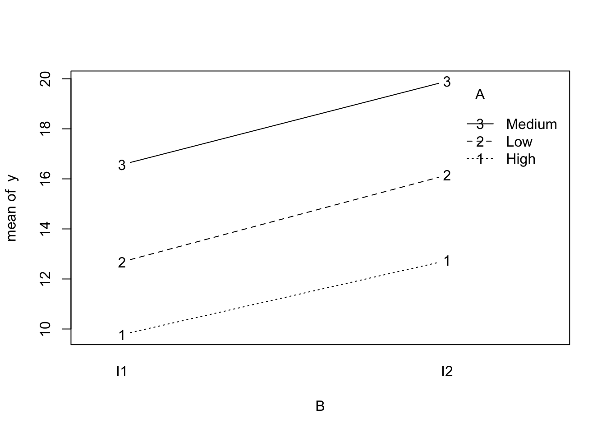

11Week 10: One-Way ANOVA, Two-Way ANOVA, and ANCOVA in the Linear Model Framework
In this week, we study one-way ANOVA, two-way ANOVA, and analysis of covariance as special cases of the general linear model. The main goal is to show that these topics are not separate from regression, but are natural modelling frameworks within the same matrix-based system. This helps students unify mean comparisons, factor effects, covariate adjustment, and interaction analysis under one common language.
11.1 Learning Objectives
By the end of this week, students should be able to:
explain how one-way ANOVA is a special case of the linear model;
formulate and interpret two-way ANOVA models with and without interaction;
explain the role of a covariate in ANCOVA;
distinguish between main effects and interaction effects in factorial models;
interpret ANOVA and ANCOVA models using regression notation and software output;
compare group means appropriately after adjusting for covariates.
11.2 Reading
Recommended reading for this week:
Seber and Lee:
sections on analysis of variance
analysis of covariance
linear model treatment of factor and covariate effects
Montgomery, Peck, and Vining:
sections on qualitative predictors
ANOVA-style linear models
ANCOVA and adjusted comparisons
11.3 Why These Topics Belong Together
Students often first encounter ANOVA and regression as if they were separate techniques.
But in fact, they are part of the same linear modelling framework.
For example:
one-way ANOVA compares group means;
two-way ANOVA studies the effects of two factors and possibly their interaction;
ANCOVA compares groups while adjusting for a continuous covariate.
All of these can be written as linear models using an appropriate design matrix.
\(\alpha_i\) is the effect of level \(i\) of factor A;
\(\beta_j\) is the effect of level \(j\) of factor B;
\((\alpha\beta)_{ij}\) is the interaction effect for the combination of levels \((i,j)\).
11.11 Main Effects in Two-Way ANOVA
A main effect describes how the mean response changes across levels of one factor, averaging over the levels of the other factor, when the interaction is absent or appropriately interpreted.
For example:
factor A main effect asks whether changing the level of A shifts the mean response;
factor B main effect asks the analogous question for B.
However, if interaction is strong, main effects must be interpreted with care.
11.12 Interaction in Two-Way ANOVA
Interaction means that the effect of one factor depends on the level of the other factor.
If there is no interaction, the mean structure is additive:
This model should be considered when the relationship between the response and the covariate appears different across groups.
11.22 Why the Parallel Slopes Assumption Matters
If the slopes are not truly parallel but we fit a common-slope ANCOVA model, then the adjusted group comparison may be misleading.
So a practical workflow is often:
fit the interaction model first;
assess whether the interaction is needed;
if the interaction is not important, use the simpler common-slope ANCOVA model.
11.23 Adjusted Means
A major idea in ANCOVA is the comparison of adjusted means.
These are group means adjusted to a common covariate value, often the overall mean of the covariate.
Adjusted means are useful because they allow group comparison after accounting for systematic covariate differences.
11.24 One-Way ANOVA, Two-Way ANOVA, and ANCOVA as Nested Models
These topics can all be understood through model comparison.
Examples:
one-way ANOVA compares the intercept-only model to a model with group effects;
two-way ANOVA compares models with and without main effects or interaction;
ANCOVA compares models with and without the covariate, group effect, or interaction.
This nested-model view links directly back to the general linear hypothesis framework.
11.25 Post Hoc Comparisons
After a significant ANOVA result, we may wish to compare specific groups.
Examples include:
all pairwise comparisons;
treatment versus control;
preplanned contrasts.
These are again linear functions of model parameters.
So post hoc or planned comparisons fit naturally into the contrast framework from the previous week.
11.26 Interpretation and Caution
In factor models, coefficient interpretation depends on coding.
For example, treatment coding, sum-to-zero coding, and cell-means coding all yield different raw coefficients.
Therefore students should focus on:
fitted means;
differences among means;
interactions;
clearly defined hypotheses.
These are more stable and meaningful than memorizing one coding-specific coefficient interpretation.
11.27 Worked Example With One-Way ANOVA
Suppose three teaching methods are compared.
A one-way ANOVA model asks whether the mean outcome differs across the three methods.
This can be written either as a group-means model or as a regression with two indicators and an intercept.
The overall \(F\) test asks whether all three group means are equal.
If the null is rejected, further contrasts can be used to compare specific methods.
11.28 Worked Example With Two-Way ANOVA
Suppose yield is measured under:
three fertilizer types;
two irrigation levels.
A two-way ANOVA model can assess:
whether fertilizer matters;
whether irrigation matters;
whether the effect of fertilizer depends on irrigation.
This is a direct example of main effects and interaction in a factorial design.
11.29 Worked Example With ANCOVA
Suppose two treatment groups are compared on a final score, and baseline score is available as a covariate.
A simple ANCOVA model adjusts the treatment comparison for baseline.
This often provides a more precise and fairer comparison than comparing final means alone.
11.30 R Demonstration With One-Way ANOVA
11.31 Simulate one-way ANOVA data
set.seed(123)group <-factor(rep(c("A", "B", "C"), each =12))mu <-c(A =10, B =13, C =15)y <- mu[group] +rnorm(length(group), sd =2)dat1 <-data.frame(y = y, group = group)fit1 <-lm(y ~ group, data = dat1)summary(fit1)
Call:
lm(formula = y ~ group, data = dat1)
Residuals:
Min 1Q Median 3Q Max
-3.7417 -1.3371 -0.0372 1.3274 3.9969
Coefficients:
Estimate Std. Error t value Pr(>|t|)
(Intercept) 10.3884 0.5465 19.008 < 2e-16 ***
groupB 2.1886 0.7729 2.832 0.00783 **
groupC 4.9800 0.7729 6.443 2.63e-07 ***
---
Signif. codes: 0 '***' 0.001 '**' 0.01 '*' 0.05 '.' 0.1 ' ' 1
Residual standard error: 1.893 on 33 degrees of freedom
Multiple R-squared: 0.5583, Adjusted R-squared: 0.5316
F-statistic: 20.86 on 2 and 33 DF, p-value: 1.393e-06
anova(fit1)
Analysis of Variance Table
Response: y
Df Sum Sq Mean Sq F value Pr(>F)
group 2 149.53 74.764 20.858 1.393e-06 ***
Residuals 33 118.28 3.584
---
Signif. codes: 0 '***' 0.001 '**' 0.01 '*' 0.05 '.' 0.1 ' ' 1
11.33 Pairwise comparisons through linear contrasts
b <-coef(fit1)V <-vcov(fit1)# Under treatment coding with A as reference:# mean_A = beta0# mean_B = beta0 + beta_groupB# mean_C = beta0 + beta_groupC# Compare B and Ca <-c(0, 1, -1)est <-sum(a * b)se <-sqrt(t(a) %*% V %*% a)t_stat <- est / sedf <-df.residual(fit1)p_val <-2*pt(abs(t_stat), df = df, lower.tail =FALSE)c(estimate = est, se = se, t = t_stat, p_value = p_val)
estimate se t p_value
-2.7913915175 0.7729112696 -3.6115290685 0.0009983035
11.34 R Demonstration With Two-Way ANOVA
11.35 Simulate factorial data
set.seed(456)A <-factor(rep(c("Low", "Medium", "High"), each =16))B <-factor(rep(rep(c("I1", "I2"), each =8), times =3))mean_table <-matrix(c(10, 12,13, 15,16, 20), nrow =3, byrow =TRUE)mu2 <-numeric(length(A))for (i inseq_along(mu2)) { mu2[i] <- mean_table[which(levels(A) == A[i]), which(levels(B) == B[i])]}y2 <- mu2 +rnorm(length(mu2), sd =1.8)dat2 <-data.frame(y = y2, A = A, B = B)
11.36 Fit additive and interaction models
fit2_add <-lm(y ~ A + B, data = dat2)fit2_int <-lm(y ~ A * B, data = dat2)summary(fit2_add)
Call:
lm(formula = y ~ A + B, data = dat2)
Residuals:
Min 1Q Median 3Q Max
-3.7012 -0.9352 -0.0968 1.3177 3.6363
Coefficients:
Estimate Std. Error t value Pr(>|t|)
(Intercept) 9.6318 0.5460 17.641 < 2e-16 ***
ALow 3.1589 0.6687 4.724 2.39e-05 ***
AMedium 6.9782 0.6687 10.435 1.76e-13 ***
BI2 3.2551 0.5460 5.962 3.84e-07 ***
---
Signif. codes: 0 '***' 0.001 '**' 0.01 '*' 0.05 '.' 0.1 ' ' 1
Residual standard error: 1.891 on 44 degrees of freedom
Multiple R-squared: 0.7669, Adjusted R-squared: 0.751
F-statistic: 48.26 on 3 and 44 DF, p-value: 5.777e-14
summary(fit2_int)
Call:
lm(formula = y ~ A * B, data = dat2)
Residuals:
Min 1Q Median 3Q Max
-3.7466 -0.9687 -0.0766 1.2641 3.5344
Coefficients:
Estimate Std. Error t value Pr(>|t|)
(Intercept) 9.7795 0.6832 14.314 < 2e-16 ***
ALow 2.9039 0.9662 3.005 0.00446 **
AMedium 6.7902 0.9662 7.028 1.33e-08 ***
BI2 2.9598 0.9662 3.063 0.00381 **
ALow:BI2 0.5099 1.3664 0.373 0.71091
AMedium:BI2 0.3760 1.3664 0.275 0.78456
---
Signif. codes: 0 '***' 0.001 '**' 0.01 '*' 0.05 '.' 0.1 ' ' 1
Residual standard error: 1.932 on 42 degrees of freedom
Multiple R-squared: 0.7677, Adjusted R-squared: 0.7401
F-statistic: 27.77 on 5 and 42 DF, p-value: 2.628e-12
anova(fit2_add, fit2_int)
Analysis of Variance Table
Model 1: y ~ A + B
Model 2: y ~ A * B
Res.Df RSS Df Sum of Sq F Pr(>F)
1 44 157.40
2 42 156.84 2 0.55902 0.0749 0.928
anova(fit2_int)
Analysis of Variance Table
Response: y
Df Sum Sq Mean Sq F value Pr(>F)
A 2 390.72 195.360 52.3157 3.958e-12 ***
B 1 127.15 127.149 34.0494 6.855e-07 ***
A:B 2 0.56 0.280 0.0749 0.928
Residuals 42 156.84 3.734
---
Signif. codes: 0 '***' 0.001 '**' 0.01 '*' 0.05 '.' 0.1 ' ' 1
11.37 Interaction plot
with(dat2, interaction.plot(x.factor = B, trace.factor = A, response = y,fun = mean, type ="b", legend =TRUE))

11.38 R Demonstration With ANCOVA
11.39 Simulate ANCOVA-style data
set.seed(789)n <-80group3 <-factor(rep(c("Control", "Treatment"), each = n /2))x <-rnorm(n, mean =50, sd =10)y3 <-20+0.7* x +ifelse(group3 =="Treatment", 4, 0) +rnorm(n, sd =4)dat3 <-data.frame(y = y3, x = x, group = group3)fit3 <-lm(y ~ x + group, data = dat3)fit3_int <-lm(y ~ x * group, data = dat3)summary(fit3)
Call:
lm(formula = y ~ x + group, data = dat3)
Residuals:
Min 1Q Median 3Q Max
-11.2460 -2.4058 0.4175 2.2633 12.6605
Coefficients:
Estimate Std. Error t value Pr(>|t|)
(Intercept) 21.61302 2.49417 8.665 5.30e-13 ***
x 0.65937 0.05125 12.865 < 2e-16 ***
groupTreatment 4.46782 0.95667 4.670 1.25e-05 ***
---
Signif. codes: 0 '***' 0.001 '**' 0.01 '*' 0.05 '.' 0.1 ' ' 1
Residual standard error: 4.094 on 77 degrees of freedom
Multiple R-squared: 0.7591, Adjusted R-squared: 0.7528
F-statistic: 121.3 on 2 and 77 DF, p-value: < 2.2e-16
summary(fit3_int)
Call:
lm(formula = y ~ x * group, data = dat3)
Residuals:
Min 1Q Median 3Q Max
-11.2681 -2.4000 0.4132 2.2713 12.6713
Coefficients:
Estimate Std. Error t value Pr(>|t|)
(Intercept) 21.499220 4.414169 4.871 5.92e-06 ***
x 0.661792 0.092900 7.124 5.13e-10 ***
groupTreatment 4.638217 5.520886 0.840 0.403
x:groupTreatment -0.003501 0.111709 -0.031 0.975
---
Signif. codes: 0 '***' 0.001 '**' 0.01 '*' 0.05 '.' 0.1 ' ' 1
Residual standard error: 4.121 on 76 degrees of freedom
Multiple R-squared: 0.7591, Adjusted R-squared: 0.7496
F-statistic: 79.81 on 3 and 76 DF, p-value: < 2.2e-16
anova(fit3, fit3_int)
Analysis of Variance Table
Model 1: y ~ x + group
Model 2: y ~ x * group
Res.Df RSS Df Sum of Sq F Pr(>F)
1 77 1290.8
2 76 1290.8 1 0.016686 0.001 0.9751
lm(y ~ A * B) fits a two-way ANOVA model with interaction;
lm(y ~ x + group) fits a common-slope ANCOVA model;
lm(y ~ x * group) fits an ANCOVA model with group-specific slopes.
Students should recognize that these are all regression models differing only in the structure of the design matrix.
11.42 A Practical Workflow
A useful modelling workflow is:
identify whether predictors are factors, covariates, or both;
decide whether interactions are scientifically plausible;
fit the more complete model when appropriate;
test whether interaction is needed;
interpret fitted means or adjusted means rather than raw coding-specific coefficients;
use contrasts for focused follow-up questions.
11.43 In-Class Discussion Questions
Why is one-way ANOVA just a regression model with indicator variables?
Why should interaction be considered before interpreting main effects in two-way ANOVA?
What does ANCOVA adjust for that ordinary group-mean comparison does not?
Why can coefficient interpretation depend on coding while fitted means do not?
11.44 Practice Problems
11.45 Conceptual
Explain the difference between a one-way ANOVA model and an ANCOVA model.
Explain what interaction means in a two-way ANOVA setting.
Explain why adjusted means are useful in ANCOVA.
11.46 Computational
Suppose there are three groups A, B, and C, and treatment coding is used with A as the reference group. The fitted model is
\[
\hat{Y} = 8 + 2z_1 + 5z_2.
\]
What is the fitted mean for group A?
What is the fitted mean for group B?
What is the fitted mean for group C?
What is the estimated difference between groups B and C?
Now consider the ANCOVA model
\[
\hat{Y} = 12 + 0.6x + 3z,
\]
where \(z=1\) for treatment and \(z=0\) for control.
Interpret the coefficient of \(x\).
Interpret the coefficient of \(z\).
Compute the fitted mean when \(x=10\) for control and treatment.
11.47 Model-Comparison Problem
You fit the following two models:
Model 1: y ~ x + group
Model 2: y ~ x * group
What extra term is in Model 2?
What scientific question does the comparison test?
Why would a significant interaction affect the interpretation of the group effect?
11.48 Suggested Homework
Complete the following tasks:
fit a one-way ANOVA model and interpret the overall \(F\) test;
carry out at least two follow-up contrasts among group means;
fit a two-way ANOVA model with interaction and interpret the interaction term;
fit an ANCOVA model and explain the meaning of adjusted group comparison;
compare an ANCOVA model with and without interaction and explain which one you prefer.
11.49 Summary
In this week, we studied one-way ANOVA, two-way ANOVA, and ANCOVA within the general linear model framework.
We emphasized that:
ANOVA models are regression models with categorical predictors;
two-way ANOVA introduces main effects and interaction;
ANCOVA combines factor effects with continuous covariate adjustment;
fitted means, adjusted means, and contrasts are often more meaningful than raw coding-specific coefficients;
model comparison through general linear hypotheses unifies all these settings.
Next week, a natural continuation is to study generalized least squares and correlated errors, or to move toward repeated-measures and mixed-model ideas, depending on the course emphasis.